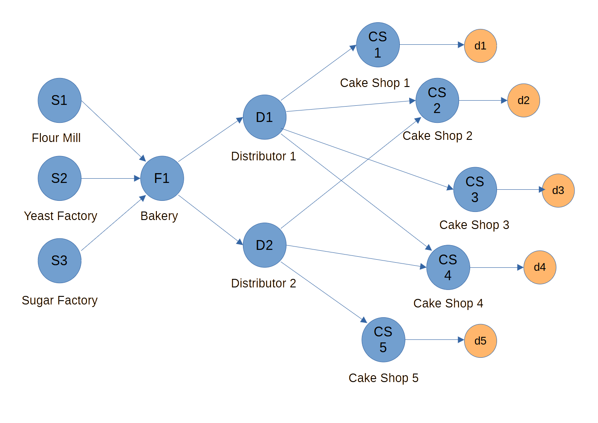

Complex Supply Chain Network
This example demonstrates how to build and simulate a multi‑echelon, hybrid supply chain with different replenishment policies in SupplyNetPy.

Goals
- Creating a network with multiple raw materials, suppliers, a manufacturer, two distributors, and several retailers.
- Mix replenishment policies (`SS`, `RQ`, `Periodic`).
- Include hybrid connections (ordering from multiple distributors).
Key Concepts Used
- Products, Raw Materials: Class
Productused to create a product, Bread, with some shelf life,RawMaterialis used to create raw materials (dough, sugar, yeast) - Nodes: Clasees
Supplier,Manufacturer,InventoryNodeare used to create suppliers, bakery (factory), distributors, and retailers (cake shops). - Links: Class
Linkis used to link different nodes in the network - Policies:
SSReplenishment: order up to S when inventory <= sRQReplenishment: reorder point R, fixed order quantity QPeriodicReplenishment: review every T, order Q.
- Perishability:
inventory_typefor all nodes isperishable, and parametershelf_lifeis passed.
Full Example
This script constructs a hybrid network with two distributors and five retailers, then runs a short simulation.
import SupplyNetPy.Components as scm
import simpy
import numpy as np
class Distributions:
def __init__(self, lam=5, mu=5, low=1, high=10):
self.lam = lam
self.mu = mu
self.low = low
self.high = high
def poisson_arrival(self):
return np.random.exponential(scale=1/self.lam)
def uniform_quantity(self):
return int(np.random.uniform(low=self.low, high=self.high))
env = simpy.Environment()
# ------------------- Raw Materials -------------------
flour = scm.RawMaterial(ID='flourk11', name='Flour', extraction_quantity=50,
extraction_time=1, mining_cost=10, cost=2.5)
sugar = scm.RawMaterial(ID='sugark21', name='Sugar', extraction_quantity=30,
extraction_time=1, mining_cost=8, cost=1.4)
yeast = scm.RawMaterial(ID='yeast31', name='Yeast', extraction_quantity=20,
extraction_time=1, mining_cost=3, cost=0.2)
# ------------------- Suppliers -------------------
flour_mill = scm.Supplier(env=env, ID='fmill', name='Flour Mill',
node_type='infinite_supplier', raw_material=flour, logging=False)
sugar_factory = scm.Supplier(env=env, ID='sfact', name='Sugar Factory',
node_type='infinite_supplier', raw_material=sugar, logging=False)
yeast_factory = scm.Supplier(env=env, ID='yfact', name='Yeast Factory',
node_type='infinite_supplier', raw_material=yeast, logging=False)
# ------------------- Manufacturer -------------------
bread = scm.Product(ID='soft_regular11', name='Bread', manufacturing_cost=10, manufacturing_time=1,
sell_price=40, raw_materials=[(flour, 30), (sugar, 15), (yeast, 15)], batch_size=300)
bakery = scm.Manufacturer(env=env, ID='bakery', name='Bakery', product=bread, shelf_life=5,
inventory_type='perishable', capacity=500, initial_level=100,
inventory_holding_cost=0.5, replenishment_policy=scm.SSReplenishment,
policy_param={'s':300,'S':400}, product_sell_price=35, logging=False)
# ------------------- Distributors -------------------
distributor1 = scm.InventoryNode(env=env, ID='dist1', name='Distributor 1', node_type='distributor', product=bread,
inventory_type='perishable', shelf_life=5,
capacity=float('inf'), initial_level=50, inventory_holding_cost=0.2,
replenishment_policy=scm.RQReplenishment, policy_param={'R':150,'Q':50},
product_buy_price=0, product_sell_price=36, logging=False)
distributor2 = scm.InventoryNode(env=env, ID='dist2', name='Distributor 2', node_type='distributor', product=bread,
inventory_type='perishable', shelf_life=5,
capacity=float('inf'), initial_level=40, inventory_holding_cost=0.25,
replenishment_policy=scm.SSReplenishment, policy_param={'s':150,'S':200},
product_buy_price=0, product_sell_price=37, logging=False)
# ------------------- Retailers -------------------
cake_shops = []
capacities = [40,60,80,60,100]
ini_levels = [30,20,30,20,50]
policies = [scm.RQReplenishment, scm.PeriodicReplenishment, scm.SSReplenishment, scm.RQReplenishment, scm.PeriodicReplenishment]
policy_params = [{'R':20,'Q':40}, {'T':3,'Q':50}, {'s':20,'S':50}, {'R':20,'Q':40}, {'T':3,'Q':100}]
supplier_selection = [scm.SelectFirst,scm.SelectAvailable,scm.SelectFirst,scm.SelectAvailable,scm.SelectFirst]
for i in range(0,5):
shop = scm.InventoryNode(env=env, ID=f'cake_shop{i+1}', name=f'Cake Shop {i+1}', node_type='retailer', product=bread,
inventory_type='perishable', shelf_life=5,
capacity=capacities[i], initial_level=ini_levels[i], inventory_holding_cost=0.1,
replenishment_policy=policies[i], policy_param=policy_params[i],
supplier_selection_policy=supplier_selection[i],
product_buy_price=25, product_sell_price=40, logging=False)
cake_shops.append(shop)
# ------------------- Links -------------------
links = []
# Raw material links, suppliers to bakery
suppliers = [flour_mill, sugar_factory, yeast_factory]
costs = [5, 6, 5]
for i in range(3):
links.append(scm.Link(env=env, ID=f'l{i+1}', source=suppliers[i], sink=bakery, cost=costs[i], lead_time=lambda: 0.3))
# Bakery → Distributors
links.append(scm.Link(env=env, ID='l4', source=bakery, sink=distributor1, cost=6, lead_time=lambda: 1))
links.append(scm.Link(env=env, ID='l5', source=bakery, sink=distributor2, cost=7, lead_time=lambda: 1.2))
# Distributor 1 → Shops 1, 2, 3
for i in range(0,3):
link = scm.Link(env=env, ID=f'l{i+6}', source=distributor1, sink=cake_shops[i], cost=4, lead_time=lambda: 0.4 + i*0.1)
links.append(link)
# Distributor 2 → Shops 4, 5
for i in range(3,5):
link = scm.Link(env=env, ID=f'l{i+6}', source=distributor2, sink=cake_shops[i], cost=5, lead_time=lambda: 0.5)
links.append(link)
# Hybrid cross-links
links.append(scm.Link(env=env, ID='l11', source=distributor1, sink=cake_shops[3], cost=8, lead_time=lambda: 0.5))
links.append(scm.Link(env=env, ID='l12', source=distributor2, sink=cake_shops[4], cost=6, lead_time=lambda: 0.8))
# ------------------- Demands -------------------
arrival = Distributions(lam=5)
quantity = Distributions(low=1, high=5)
demands = []
for i in range(5):
demands.append(scm.Demand(env=env, ID=f'd{i+1}', name=f'Demand Shop {i+1}', order_arrival_model=arrival.poisson_arrival,
order_quantity_model=quantity.uniform_quantity, demand_node=cake_shops[i], logging=False))
# ------------------- Network -------------------
bread_chain = scm.create_sc_net(
env=env,
nodes=[flour_mill, sugar_factory, yeast_factory, bakery,
distributor1, distributor2,
*cake_shops],
links=links,
demands=demands
)
scm.simulate_sc_net(bread_chain, sim_time=365, logging=True)
print("---- Node-wise performance ----\n---- ---- Suppliers and Bakery---- ----")
scm.print_node_wise_performance([flour_mill, sugar_factory, yeast_factory, bakery])
print("\n---- ---- Distributors ---- ----")
scm.print_node_wise_performance([distributor1, distributor2])
print("\n---- ---- Retail Shops ---- ----")
scm.print_node_wise_performance(cake_shops)
Sample Output
INFO sim_trace - Supply chain info:
INFO sim_trace - available_inv : 534
INFO sim_trace - avg_available_inv : 365.46027397260275
INFO sim_trace - avg_cost_per_item : 1.8309188338110083
INFO sim_trace - avg_cost_per_order : 352.90117548464065
INFO sim_trace - backorders : [182, 23989]
INFO sim_trace - demand_by_customers : [9175, 22985]
INFO sim_trace - demand_by_site : [436, 1829491]
INFO sim_trace - demands : {'d1': Demand Shop 1, 'd2': Demand Shop 2, 'd3': Demand Shop 3, 'd4': Demand Shop 4, 'd5': Demand Shop 5}
INFO sim_trace - env : <simpy.core.Environment object at 0x00000278F5714A10>
INFO sim_trace - fulfillment_received_by_customers : [911, 2193]
INFO sim_trace - fulfillment_received_by_site : [412, 1827149]
INFO sim_trace - inventory_carry_cost : 59324.19758288176
INFO sim_trace - inventory_spend_cost : 3056583.0
INFO sim_trace - inventory_waste : 25961
INFO sim_trace - links : {'l1': fmill to bakery, 'l2': sfact to bakery, 'l3': yfact to bakery, 'l4': bakery to dist1, 'l5': bakery to dist2, 'l6': dist1 to cake_shop1, 'l7': dist1 to cake_shop2, 'l8': dist1 to cake_shop3, 'l9': dist2 to cake_shop4, 'l10': dist2 to cake_shop5, 'l11': dist1 to cake_shop4, 'l12': dist2 to cake_shop5}
INFO sim_trace - nodes : {'fmill': Flour Mill, 'sfact': Sugar Factory, 'yfact': Yeast Factory, 'bakery': Bakery, 'dist1': Distributor 1, 'dist2': Distributor 2, 'cake_shop1': Cake Shop 1, 'cake_shop2': Cake Shop 2, 'cake_shop3': Cake Shop 3, 'cake_shop4': Cake Shop 4, 'cake_shop5': Cake Shop 5}
INFO sim_trace - num_distributors : 2
INFO sim_trace - num_manufacturers : 1
INFO sim_trace - num_of_links : 12
INFO sim_trace - num_of_nodes : 11
INFO sim_trace - num_retailers : 5
INFO sim_trace - num_suppliers : 3
INFO sim_trace - profit : -2226001.1975828814
INFO sim_trace - revenue : 1165732
INFO sim_trace - shortage : [8446, 34633]
INFO sim_trace - total_cost : 3391733.1975828814
INFO sim_trace - total_demand : [9611, 1852476]
INFO sim_trace - total_fulfillment_received : [1323, 1829342]
INFO sim_trace - transportation_cost : 2466
---- Node-wise performance ----
---- ---- Suppliers and Bakery---- ----
Performance Metric Flour Mill Sugar Factory Yeast Factory Bakery
backorder [0, 0] [0, 0] [0, 0] [132, 22135]
demand_fulfilled [21, 898260] [21, 449130] [21, 449130] [214, 26936]
demand_placed [0, 0] [0, 0] [0, 0] [63, 1796520]
demand_received [21, 898260] [21, 449130] [21, 449130] [228, 29138]
fulfillment_received [0, 0] [0, 0] [0, 0] [63, 1796520]
inventory_carry_cost 0 0 0 53334.0
inventory_level 0 0 0 500
inventory_spend_cost 0 0 0 2964258.0
inventory_waste 0 0 0 243
node_cost 0 0 0 3291288.0
orders_shortage [0, 0] [0, 0] [0, 0] [132, 12825]
profit 2245650.0 628782.0 89826.0 -2348528.0
revenue 2245650.0 628782.0 89826.0 942760
total_material_cost 0 0 0 N/A
total_raw_materials_mined0 0 0 N/A
transportation_cost 0 0 0 336
---- ---- Distributors ---- ----
Performance Metric Distributor 1 Distributor 2
backorder [26, 805] [24, 1049]
demand_fulfilled [60, 1389] [75, 2304]
demand_placed [124, 6200] [104, 22938]
demand_received [67, 1449] [78, 2384]
fulfillment_received [116, 5800] [98, 21136]
inventory_carry_cost 1165.8018979669055 4439.666173296053
inventory_level 7 27
inventory_spend_cost 0 0
inventory_waste 4842 19345
node_cost 1909.8018979669055 5167.666173296053
orders_shortage [26, 470] [24, 691]
profit 48094.19810203309 80080.33382670395
revenue 50004 85248
transportation_cost 744 728
---- ---- Retail Shops ---- ----
Performance Metric Cake Shop 1 Cake Shop 2 Cake Shop 3 Cake Shop 4 Cake Shop 5
backorder [0, 0] [0, 0] [0, 0] [0, 0] [0, 0]
demand_fulfilled [39, 96] [239, 555] [39, 105] [310, 757] [284, 680]
demand_placed [8, 198] [52, 947] [7, 304] [29, 1160] [49, 1224]
demand_received [39, 96] [239, 555] [39, 105] [310, 757] [284, 680]
fulfillment_received [8, 198] [45, 887] [7, 304] [28, 1120] [47, 1184]
inventory_carry_cost 9.42778086039718 81.4112372198074 15.98847104347198 148.6863226007502 129.21569989437646
inventory_level 0 0 0 0 0
inventory_spend_cost 4950 22175 7600 28000 29600
inventory_waste 102 352 200 383 494
node_cost 4991.427780860397 22464.411237219807 7643.988471043472 28293.68632260075 29974.215699894376
orders_shortage [1759, 4320] [1595, 3992] [1787, 4534] [1567, 3925] [1556, 3876]
profit -1151.4277808603974 -264.41123721980694 -3443.9884710434717 1986.3136773992483 -2774.2156998943756
revenue 3840 22200 4200 30280 27200
transportation_cost 32 208 28 145 245
Suggested Experiments
- Vary
policy_paramvalues (s/S,R/Q,T/Q). - Change
lead_timelambdas and link costs. - Switch retailer
inventory_typeandshelf_lifeto study perishability. - Add/remove cross‑links to test resilience.
Notes
- Keep node IDs unique.
- Ensure
product_buy_price≤ upstreamproduct_sell_pricewhere applicable. - Use consistent time units across processing, lead times, and review periods.